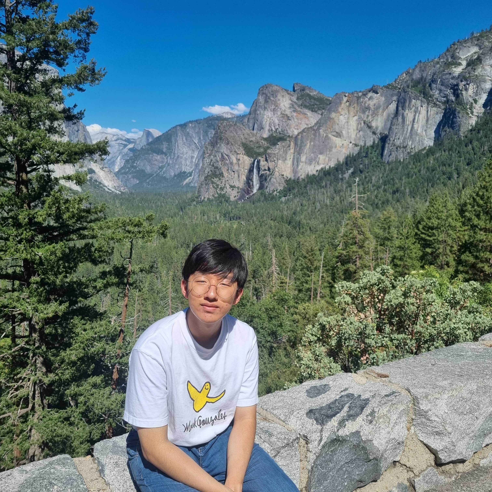
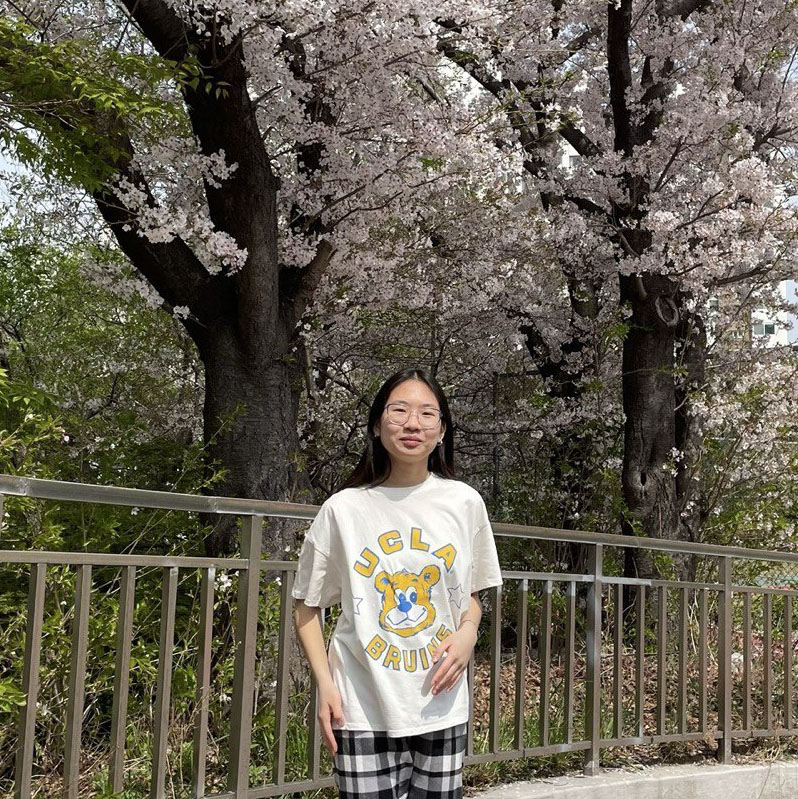

people
we are always seeking highly motivated and talented colleagues to join us!

|
Sung Sun Yim cv Assistant Professor, Engineering Biology, KAIST (2022-)sungsunyim@kaist.ac.kr Postdoc, Systems Biology, Columbia University, with Harris H. Wang Ph.D., Chemical and Biomolecular Engineering, KAIST, with Ki Jun Jeong B.S., Chemical and Biomolecular Engineering, KAIST |

|
Changhee Won Graduate Student, Biological Sciences, KAIST (2022.9.-)wjc107@kaist.ac.kr B.S., Biotechnology, Korea University (2022.2.) |

|
Dongha Lee Graduate Student, Biological Sciences, KAIST (2022.9.-)ahooha@kaist.ac.kr B.S., Genetic Engineering, Kyung Hee University (2022.2.) |
|
Hyeri Jang Graduate Student, Biological Sciences, KAIST (2023.3.-)hyerijang@kaist.ac.kr B.S., Biology, Kyungpook National University (2023.2.) |

|
Geunhui Shin Graduate Student, Biological Sciences, KAIST (2023.3.-)geunhui.shin@kaist.ac.kr B.S., Transdisciplinary Studies, DGIST (2022.8.) |

|
Eunseok Cho Graduate Student, Biological Sciences, KAIST (2024.3.-)eoxhdfud35@kaist.ac.kr B.S., Biological Sciences, KAIST (2022.2.) |

|
Sehyun Kim Graduate Student, Biological Sciences, KAIST (2024.3.-)ccodojunior@kaist.ac.kr B.S., Biological Sciences, KAIST (2024.2.) |
|
Hyorim Ryu Graduate Student, Biological Sciences, KAIST (2024.3.-)zzicgun@kaist.ac.kr B.S., Biological Sciences, Seoul National University (2023.8.) |

|
Sanghyun Chung Graduate Student, Engineering Biology, KAIST (2024.9.-)bio-csh99@kaist.ac.kr B.S., Systems Biotechnology, Chung-Ang University (2024.8.) |

|
Thanakrit (Austin) Wongsatit Graduate Student, Engineering Biology, KAIST (2025.3.-)austinwongsatit@kaist.ac.kr B.S., Bio and Brain Engineering, KAIST (2024.2.) |

|
Sunggyu Min Graduate Student, Engineering Biology, KAIST (2025.3.-)msg_kaist@kaist.ac.kr M.S., Public Health, Seoul National University (2023.8.) B.S., Life Science, Korea University (2021.2.) |

|
Seongwon Ok Graduate Student, Biological Sciences, KAIST (2025.3.-)ok_sw@kaist.ac.kr B.S., Transdisciplinary Studies, DGIST (2025.2.) |

|
Min Hyeok Yang Undergraduate Student, Biological Sciences, KAIST (2022.12.-)ringyee@kaist.ac.kr |
|  |
Minjoon Jeong Undergraduate Student, Biological Sciences, KAIST (2024.3.-)davidmj413@kaist.ac.kr |
|
Dong Yun Jung Undergraduate Student, Computer Science, KAIST (2025.7.-)djung2023@kaist.ac.kr |
|  |
Yelena Kim High School Student, Korea Science Academy (2025.3.-)23-206@ksa.hs.kr |

|
Hailey Yim Junior Volunteer (2020-)Aspiring Veterinarian Current Interest: Paw Patrol, Wish Cat, and more |